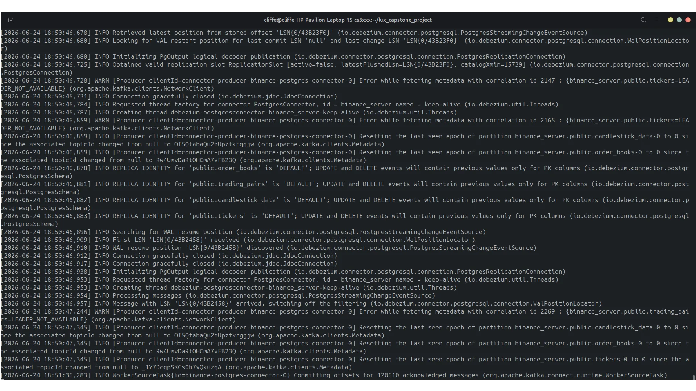
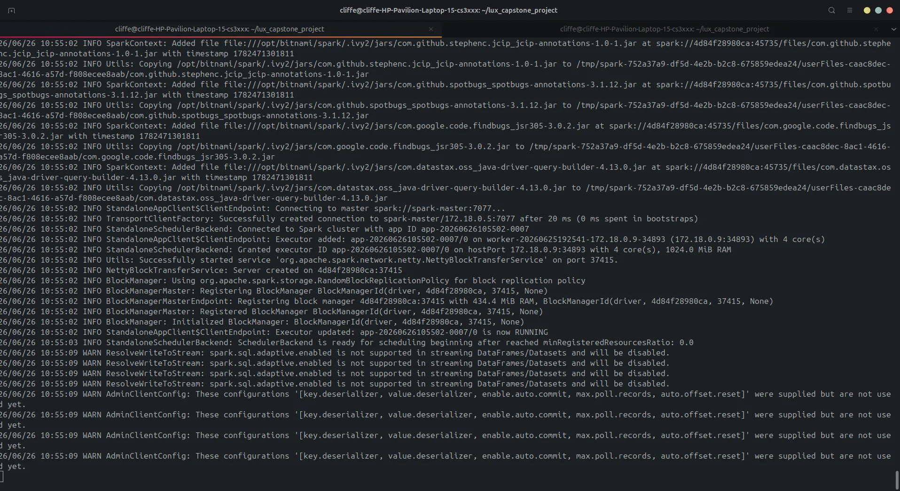
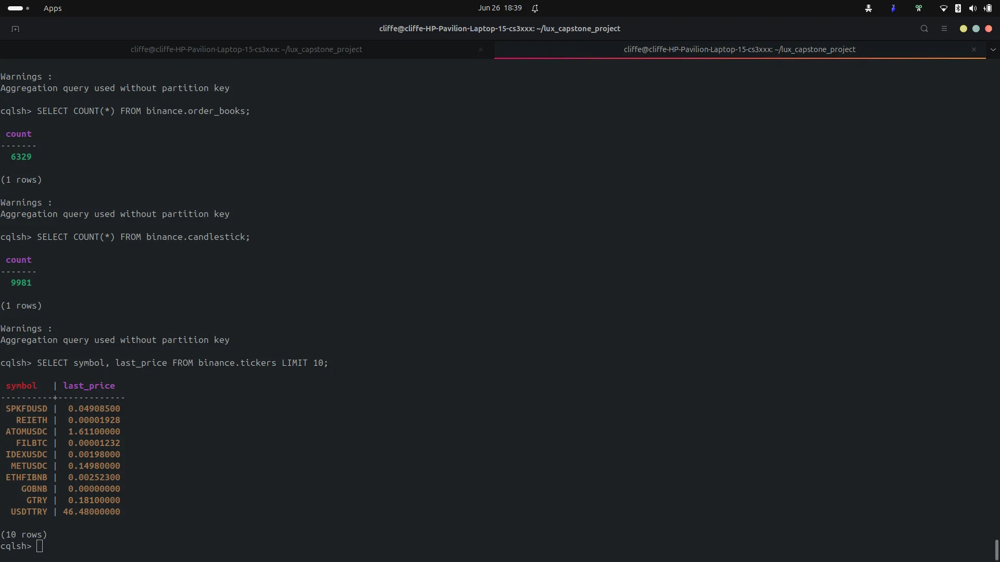
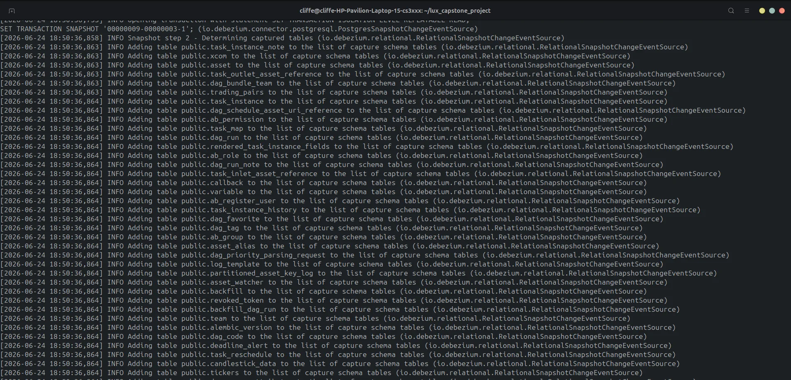

1. Hybrid-Binance-Crypto-Market-Pipeline/
115,000+ Reconciled Events
3,700+ Trading Pairs
Debezium WAL CDC
30s Spark Micro-Batch Latency
System Architecture Diagram — Change Data Capture & Micro-Batch Streaming
- Log-Based Change Data Capture (CDC): Streamed 115,000+ market events across 3,700+ Binance trading pairs by deploying Debezium CDC connectors reading directly from PostgreSQL Write-Ahead Logs (WAL) into partitioned Apache Kafka topics.
- Delivery Guarantees & Reconciliation: Verified end-to-end completeness between PostgreSQL source tables and Apache Cassandra sink partitions by tracking PostgreSQL replication slot LSN offsets, enforcing Spark checkpointing with `maxOffsetsPerTrigger`, and reconciling source-to-sink row counts.
- Micro-Batch Stream Processing: Achieved 30-second micro-batch latency and 1-minute tumbling-window spread/OHLCV aggregations in PySpark Structured Streaming, serving live orderbook depth via FastAPI and Dockerized Grafana dashboards.
Grafana Snapshot (Served via FastAPI & Cassandra)

[View Spark Streaming Logs, Fault Tolerance, Schema Capture & Cassandra Queries]
1. Fault Tolerance & Recovery:

2. Spark Structured Streaming Logs:

3. Cassandra Time-Series Sink Query:

4. Debezium CDC Schema Capture:
